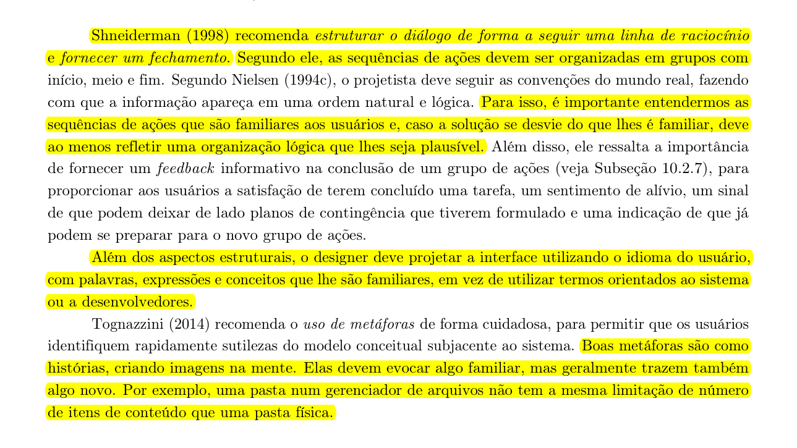
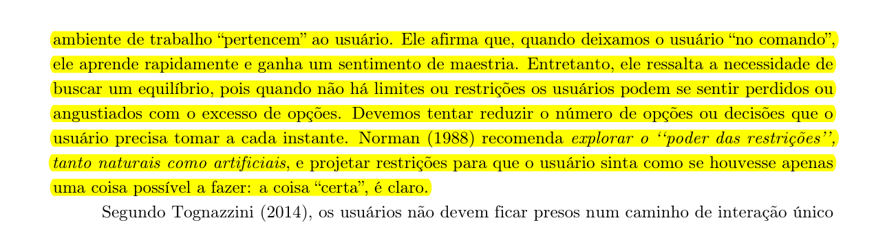
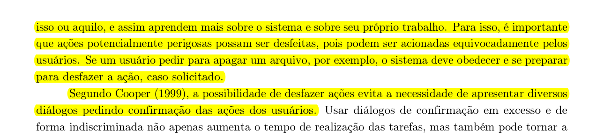
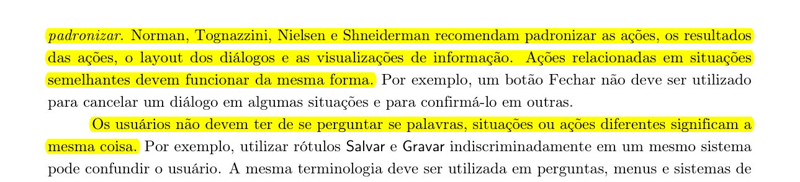
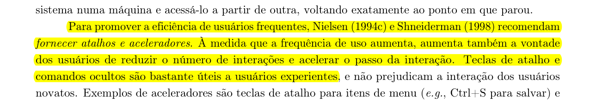
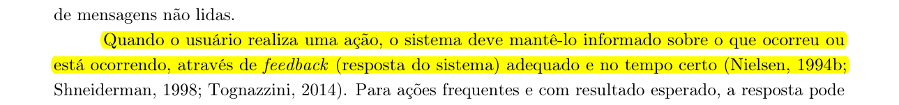
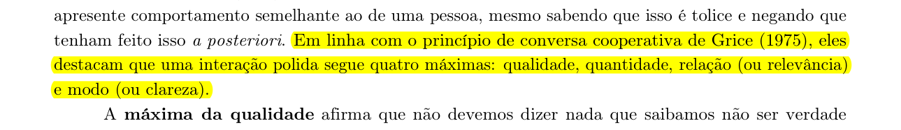
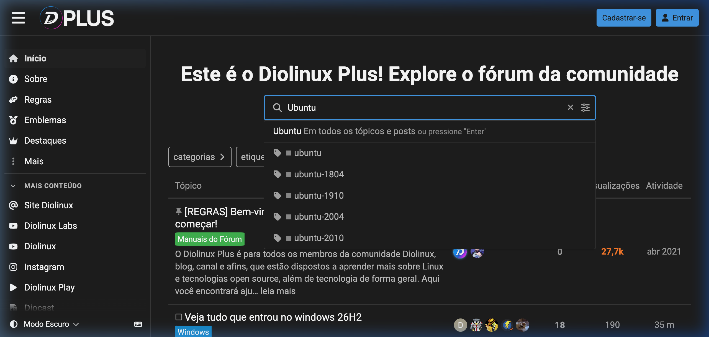
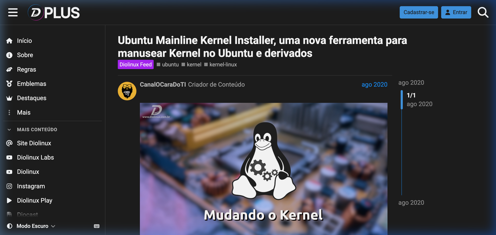
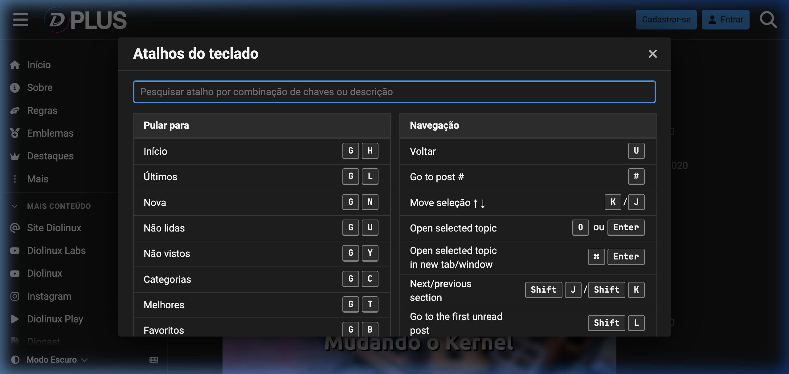

Princípios Gerais de Projeto e Avaliação Heurística
Tabela de Contribuição e Uso de IA Generativa
| Integrante | Contribuição | Revisor | Ferramenta de IA Utilizada | Propósito do Uso de IA |
|---|---|---|---|---|
| Vinicius Silva Araruna e Gustavo Antonio | Elaboração da fundamentação teórica, captura de evidências via agente web, avaliação heurística e classificação (Atende / Viola / Atende Parcialmente) | Gustavo Antonio | Gemini & Browser Subagent | Extração de páginas do livro-texto com destaques digitais e navegação automatizada para capturas de tela. |
| Edvaldo Soares Brasileiro Filho | Revisão do escopo, das inferências e da correspondência entre classificação e evidência disponível | Pendente | Codex (OpenAI) | Apoio à revisão factual e à redação, com base nas capturas registradas neste artefato. |
Introdução
Este artefato apresenta a avaliação dos Princípios Gerais de Projeto e das Heurísticas de Usabilidade de Nielsen (1994) aplicadas ao Fórum Diolinux Plus (baseado na plataforma Discourse). O objetivo é correlacionar a teoria clássica de Interação Humano-Computador (IHC) com a prática real de interface do fórum, classificando cada diretriz visual e interativa como Atende, Viola ou Atende Parcialmente, suportado por fundamentação teórica extraída da literatura e evidências visuais capturadas em tempo real.
Metodologia e Fundamentação Teórica
A análise fundamenta-se nos princípios e diretrizes de design de Barbosa e Silva (2010, Cap. 8), na edição ampliada de Barbosa et al. (2021, Cap. 10) e nas 10 Heurísticas de Usabilidade formuladas por Jakob Nielsen (1994). A indicação do capítulo varia entre as edições: o Capítulo 8 é sobre princípios na edição de 2010; na edição de 2021, o conteúdo correspondente aparece no Capítulo 10, nas páginas 221–232. O Capítulo 8 da edição de 2021 trata da organização do espaço de problema.
A inspeção da interface foi feita em 5 de outubro de 2026, no site público do Diolinux Plus, em desktop e sem autenticação. As três capturas abaixo são a evidência usada para as observações visuais. Não foram testados fluxos de publicação, recuperação de erros, conta autenticada, outros tamanhos de tela ou diferentes navegadores. Assim, Atende Parcialmente também identifica casos em que a evidência observada não permite uma conclusão completa; não significa, por si só, que o sistema falhou.
Abaixo estão apresentados os trechos originais da literatura de referência (Barbosa & Silva, 2021) recortados e destacados com marca-texto digital amarelo conforme os padrões de fundamentação:
1. Correspondência com as Expectativas dos Usuários (Nielsen H2)
O sistema deve falar a linguagem do usuário, empregando palavras, conceitos e metáforas familiares à sua cultura e modelo mental.
Figura 1: Trecho do livro destacando a linguagem do usuário, convenções do mundo real e uso de metáforas.

Fonte: BARBOSA et al. (2021, p. 223).
2. Simplicidade nas Estruturas das Tarefas (Nielsen H8 / Barbosa)
Reduzir o número de opções e decisões que o usuário precisa tomar a cada instante, explorando o poder das restrições e dividindo tarefas em passos simples.
Figura 2: Trecho do livro destacando a simplicidade da estrutura de tarefas e restrições.

Fonte: BARBOSA et al. (2021, p. 224).
3. Equilíbrio entre Controle e Liberdade do Usuário (Nielsen H3)
Deixar o usuário no comando do ambiente de trabalho e fornecer capacidade de desfazer/refazer ações potencialmente perigosas.
Figura 3: Trecho do livro destacando o controle do usuário e a reversibilidade de ações.

Fonte: BARBOSA et al. (2021, p. 225).
4. Consistência e Padronização (Nielsen H4)
Padronizar ações, resultados de ações, layouts de diálogos e terminologias para que o usuário não duvide do significado das palavras ou botões.
Figura 4: Trecho do livro destacando a consistência e padronização.

Fonte: BARBOSA et al. (2021, p. 226).
5. Promover a Eficiência e Antecipação (Nielsen H7)
Fornecer atalhos e aceleradores para usuários experientes e antecipar as necessidades do usuário disponibilizando os recursos adequados.
Figura 5: Trecho do livro destacando eficiência, aceleradores de uso e antecipação de necessidades.

Fonte: BARBOSA et al. (2021, p. 227).
6. Visibilidade do Status do Sistema e Reconhecimento (Nielsen H1 e H6)
Manter o usuário informado sobre o que ocorreu através de feedback adequado no tempo certo e visibilidade de opções.
Figura 6: Trecho do livro destacando a visibilidade e o feedback do sistema.

Fonte: BARBOSA et al. (2021, p. 228).
7. Conteúdo Relevante e Expressão Adequada (Nielsen H8)
Apresentar apenas as informações necessárias para a tarefa atual, evitando poluição visual e dados irrelevantes.
Figura 7: Trecho do livro destacando a relevância de conteúdo e clareza de expressão.

Fonte: BARBOSA et al. (2021, p. 229).
Evidências Visuais da Interface Real (Diolinux Plus)
Para fundamentar empiricamente a avaliação, utilizou-se o agente de navegação web autônomo para capturar telas reais da interface do Diolinux Plus (https://plus.diolinux.com.br):
Evidência 1: Busca Dinâmica com Sugestão Autônoma de Tags e Tópicos
A barra de pesquisa antecipa termos e classifica dinamicamente por etiquetas como #ubuntu, #ubuntu-2004 e resultados prévios, reduzindo o esforço do usuário ao buscar soluções repetidas.
Figura 8: Captura real da barra de busca do Diolinux Plus com autocomplete e tags.

Fonte: Captura realizada via agente web no fórum Diolinux Plus.
Evidência 2: Estrutura Visual de Tópico Técnico (Breadcrumbs, Status e Perfil)
Visualização de um tópico indicando categoria (Diolinux Feed), tags associadas (ubuntu, kernel, kernel-linux), selo distintivo do autor (Criador de Conteúdo) e linha do tempo lateral para navegação rápida de posts.
Figura 9: Captura real de um tópico técnico no Diolinux Plus.

Fonte: Captura realizada via agente web no fórum Diolinux Plus.
Evidência 3: Aceleradores de Produtividade (Modal de Atalhos do Teclado)
Modal de atalhos do teclado mostrando comandos de navegação, como G seguido de H para Início e G seguido de C para Categorias, além de comandos para percorrer e abrir tópicos. A captura comprova a presença da lista de atalhos, mas não avalia todas as combinações ou a facilidade de descoberta desse recurso.
Figura 10: Modal de atalhos de teclado do Discourse no Diolinux Plus.

Fonte: Captura realizada via agente web no fórum Diolinux Plus.
Avaliação Prática e Classificação dos Princípios / Heurísticas
Abaixo é apresentada a matriz de avaliação heurística detalhada da interface real do Diolinux Plus:
| # | Princípio / Heurística (Nielsen / Barbosa) | Classificação | Análise Crítica e Justificativa na Interface Real | Evidência Visual / Recurso |
|---|---|---|---|---|
| 1 | Visibilidade do Status do Sistema (Nielsen H1) | Atende | Na leitura do tópico, a linha do tempo lateral mostra a posição 1/1 e as datas da publicação. Isso ajuda a pessoa a situar-se naquela discussão; a inspeção não avaliou notificações em tempo real. |
Figura 9 |
| 2 | Correspondência com o Mundo Real (Nielsen H2 / Barbosa 1) | Atende | A busca por “Ubuntu” oferece etiquetas reconhecíveis para o domínio, como ubuntu e ubuntu-2004, e a interface está em português. |
Figura 8 |
| 3 | Controle e Liberdade do Usuário (Nielsen H3 / Barbosa 3) | Atende Parcialmente | A janela de atalhos tem um controle visível para fechá-la (X). A captura não cobre edição, exclusão, cancelamento de publicação ou desfazer/refazer ações; esses fluxos precisam de inspeção própria. |
Figura 10 |
| 4 | Consistência e Padronização (Nielsen H4 / Barbosa 4) | Atende | Nas três telas, a barra superior, a navegação lateral, os botões e o tema escuro mantêm padrões visuais reconhecíveis entre busca, tópico e atalhos. A conclusão limita-se a essas telas. | Figuras 8, 9 e 10 |
| 5 | Prevenção de Erros (Nielsen H5 / Barbosa 8) | Atende Parcialmente | Não foi capturado nem executado o fluxo de criação de publicação; por isso, não há evidência suficiente para avaliar validações, prevenção de duplicidade ou confirmações antes de ações relevantes. | Fluxo de criação não inspecionado. |
| 6 | Reconhecimento em vez de Memorização (Nielsen H6 / Barbosa 6) | Atende | A busca sugere etiquetas relacionadas ao texto digitado e a janela reúne os atalhos com seus nomes e combinações, tornando opções visíveis durante a tarefa. | Figura 8 e Figura 10 |
| 7 | Eficiência e Flexibilidade de Uso (Nielsen H7 / Barbosa 4) | Atende | A janela documenta combinações para navegar por teclado, mover a seleção e abrir tópicos, oferecendo um caminho alternativo à navegação por ponteiro. Não foram avaliados leitores de tela ou outros modos de entrada. | Figura 10 |
| 8 | Estética e Design Minimalista (Nielsen H8 / Barbosa 7) | Atende | Na tela do tópico, o título, a categoria, as etiquetas e o conteúdo formam uma hierarquia visual clara; a busca mantém sugestões associadas ao termo digitado. A análise cobre somente as telas registradas. | Figura 8 e Figura 9 |
| 9 | Ajuda aos Usuários no Reconhecimento de Erros (Nielsen H9 / Barbosa 8) | Atende Parcialmente | Não foi provocado um erro nem capturada uma mensagem de validação nesta inspeção. A clareza, a causa indicada e as opções de recuperação permanecem sem avaliação. | Fluxo de erro não inspecionado. |
| 10 | Ajuda e Documentação (Nielsen H10) | Atende Parcialmente | A página inicial apresenta links para Regras e um tópico identificado como “Manuais do Fórum”. A captura não permite verificar a cobertura, atualização ou facilidade de encontrar instruções para tarefas específicas. | Figura 8 |
Síntese dos Resultados da Avaliação Heurística
pie title Distribuição da Avaliação dos Princípios e Heurísticas
"Atende (60%)" : 6
"Atende Parcialmente (40%)" : 4
"Viola (0%)" : 0Principais Pontos Observados:
- Busca e reconhecimento: a caixa de busca sugere etiquetas relacionadas ao termo digitado.
- Navegação: a interface oferece navegação lateral, linha do tempo do tópico e comandos de teclado visíveis.
- Consistência visual: elementos recorrentes aparecem nas três telas inspecionadas.
Próximas verificações:
- Prevenção e recuperação de erros: inspecionar a criação e edição de tópicos, registrando as mensagens de validação e as opções para corrigir ou cancelar.
- Ajuda e descoberta de atalhos: observar com participantes se encontram a documentação e a janela de atalhos sem instrução prévia.
- Controle e liberdade: verificar em tarefas reais como cancelar, editar ou reverter ações e quais confirmações são exibidas.
Histórico de Versão
| Versão | Data | Descrição | Autor(es) | Revisor(es) |
|---|---|---|---|---|
1.0 |
25/09/2026 | Criação inicial do documento com os 8 princípios gerais | Gustavo Antonio | Vinicius Silva Araruna |
2.0 |
05/10/2026 | Atualização completa com marcações do livro-texto, evidências visuais do fórum real via agente web, 10 Heurísticas de Nielsen e matriz classificatória (Atende/Viola/Atende Parcialmente) | Vinicius Silva Araruna | Gustavo Antonio |
2.1 |
05/10/2026 | Ajuste da referência entre edições e revisão das classificações para separar observação de fluxos não testados | Edvaldo Soares Brasileiro Filho | Pendente |
Referências Bibliográficas
[1] BARBOSA, Simone Diniz Junqueira; SILVA, Bruno Santana da. Interação Humano-Computador. 1. ed. Rio de Janeiro: Elsevier, 2010. Cap. 8: Princípios e Diretrizes para o Design de IHC, p. 203–218.
[2] BARBOSA, Simone Diniz Junqueira et al. Interação Humano-Computador e Experiência do Usuário. 1. ed. Rio de Janeiro: Autopublicação, 2021. Cap. 10: Princípios e Diretrizes para o Design de IHC, p. 221–232.
[3] NIELSEN, Jakob. 10 Usability Heuristics for User Interface Design. Nielsen Norman Group, 1994. Disponível em: https://www.nngroup.com/articles/ten-usability-heuristics/. Acesso em: 05 out. 2026.